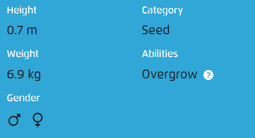
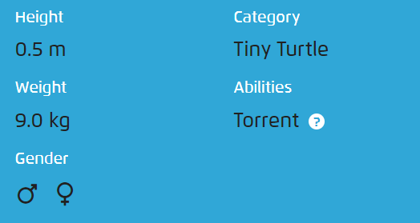

There is a plant seed on its back right from the day this Pokémon is born. The seed slowly grows larger.

It has a preference for hot things. When it rains, steam is said to spout from the tip of its tail.

When it retracts its long neck into its shell, it squirts out water with vigorous force.